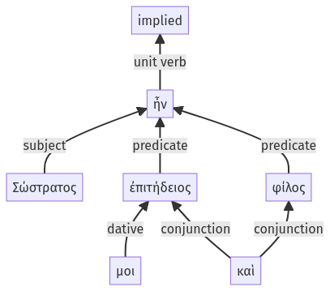

Lysias, Oration 1, 1.22.27-1.22.32a
1.22.18-1.22.26a | 1.22.33-1.22.39a
Sentence 60
1.22.27-1.22.32a
Σώστρατος ἦν μοι ἐπιτήδειος καὶ φίλος.
1 Σώστρατος ἦν μοι ἐπιτήδειος καὶ φίλος
Σώστρατος ἦν μοι ἐπιτήδειος καὶ φίλος.
Highlighting:
- connecting words
- unit verb
- subject
- object
Color code:
- independent clause (level 1, linking verb)
